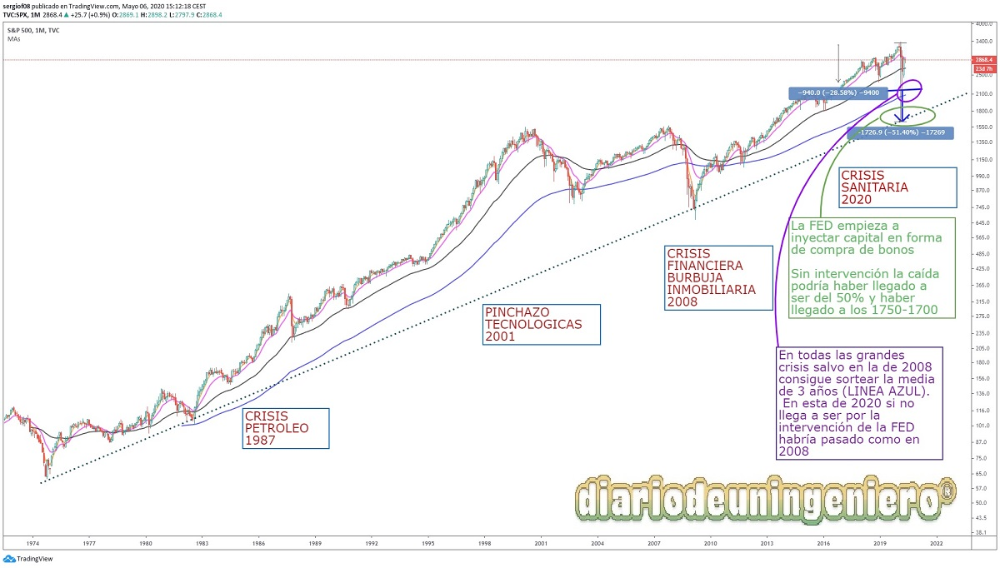
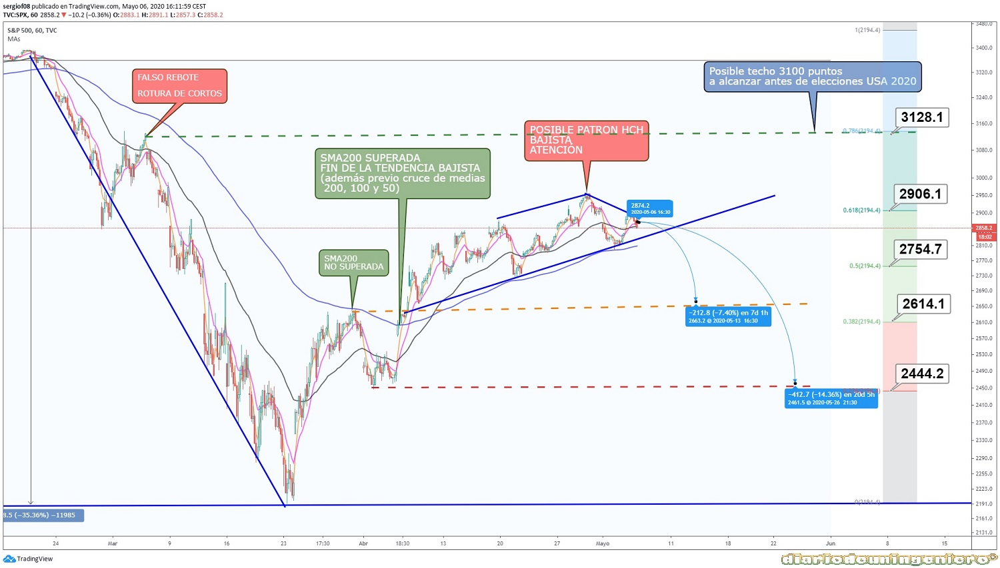
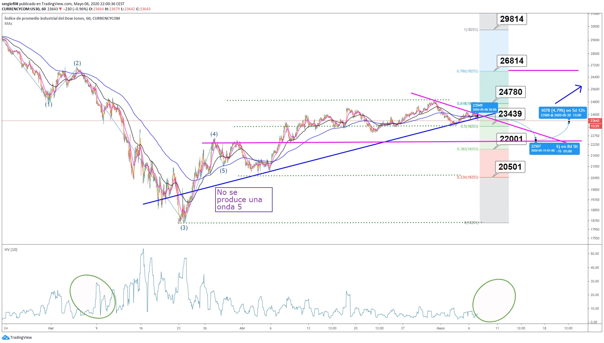
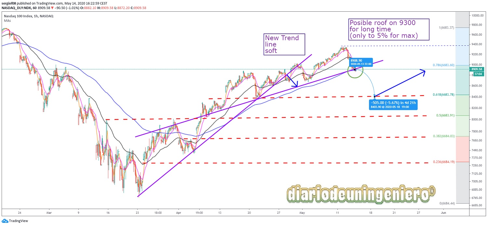
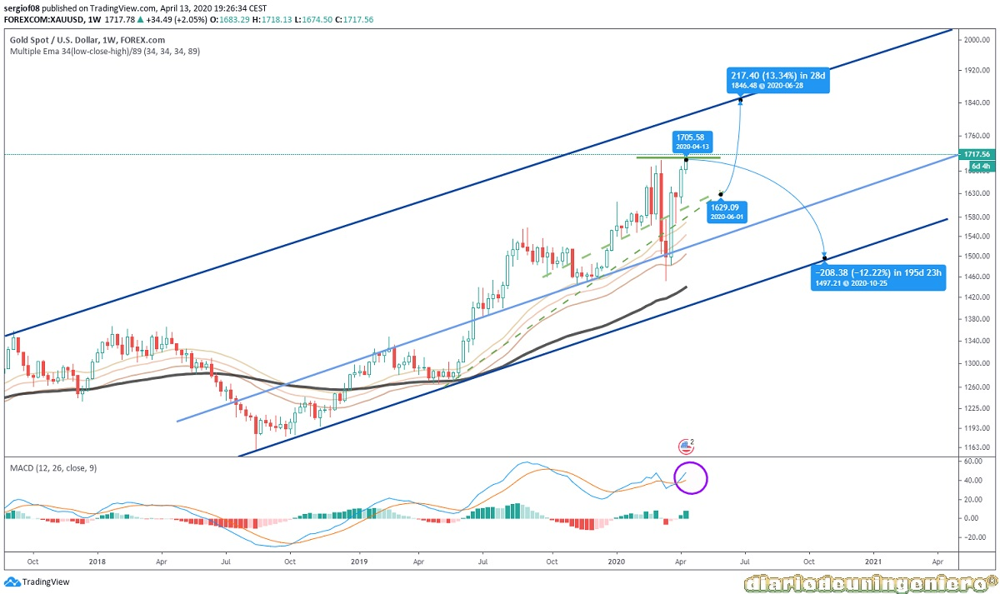
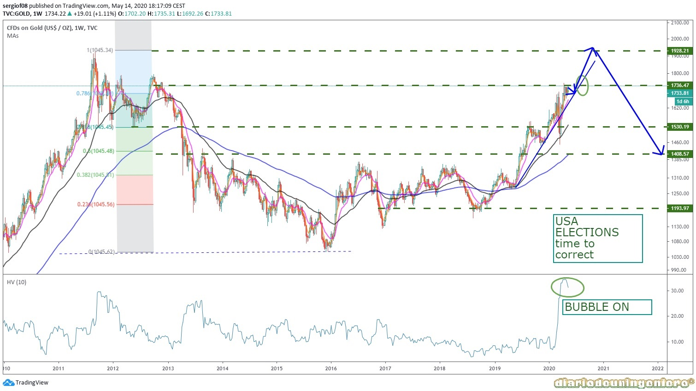

Como se ve en el gráfico el impacto de la crisis del covid en el indice de referencia mundial no esta siendo tan devastador como otras crisis como la financiera de 2008.

Esto se debe fundamentalmente al respaldo de la reserva federal a la economía mediante tres acciones:
En marzo se confirman los peores temores cuando el virus se traslada a España y empiezan a pasar de 1000 el número de muertos en Italia, esto hace presagiar que se vaya a extender a toda Europa y que pueda haber un parón productivo en todo el continente.
Existe un primer rebote en la que los índices recuperaran los 3100 puntos y no será más que una oportunidad para que muchos fondos retiren masivamente posiciones en la renta variable, así como un posible incremento de las posiciones cortas en todos los índices.
Mucho minorista que tenía los cortos mucho antes pudo pensar en salir sobre todo en USA que veían lejano el COVID19. Con lo que no aprovecharían la oportunidad, de hechos muchos pusieron largos pensando en un rebote tan corto en V debido a que los datos económicos de USA no corresponden con la magnitud de la caída.

Si nos fijamos primeramente en el Dow Jones veremos que respecto al SP500 ha seguido un comportamiento similar, si bien ha tenido unos mínimos algo mayores que represetan casí una caída máxima del 40% (18000 desde 30000) frente a 2200 desde 3500. La recuperación también ha sido grande llegando casi al umbral de los 25.000 puntos. Si nos fijamos en el gráfico que dibuje la semana pasada el 6 de Mayo, vemos como va llegando a tomar color la predicción de hice, tanto en esta como en las anteriores. Si bien ha tardado en sucumbir a la realidad.

En este dije que el soporte donde volvería rebotar se encontraría cerca de los 22.000 puntos y lo mantengo. La línea de soporte del gráfico esta algo más alta en los 22.000 pero la directriz que marca el retroceso de fibonacci respecto a la gran caída esta en 22.000. Este debería ser nuestro punto de apoyo. Si las palabras de Trump se relajan y los datos de infectados por el coronavirus siguen en descenso volverá a rebotar.
En DOW Jones será muy similar, teniendo un retroceso hasta 22,000 (el peor escenario podría ser 20,000), no pensé que fuera negativo, pero podría ser. Entonces el Nasdaq tiene un mejor comportamiento que el resto del índice, muy influenciado por grandes compañías como FB, GOOGLE (ALPHABET), MICROSOFT, APPLE. Pero se recuperó cerca del valor que tenía y ahora puede bajar fácilmente. Creo que en proporción puede ser un comportamiento similar en este momento al otro índice, pero la próxima vez que todos se recuperen puede llegar probablemente al valor anterior. Y quédate entre 10.000 y 9.300 por un tiempo. Creo que podría suceder eso a fin de año, incluso antes de las elecciones presidenciales de Estados Unidos. Este índice a influenciado en demasía al SP500, ya que muchos de los valores de este índice estan replicados en el de 500 mejores valores. Por eso esta tan distorsionado el mercado dando la apariencia de estar fuerte ahora mismo.

Si nos fijamos en niveles fibonacci vemos 8400 como candidato para el rebote, y los 8000 como segundo candidato.
En resumen, esta desventaja es un comportamiento normal como una corrección. Supongo que primero de junio subirá todo el índice, para ser el último rally. El verano será una corrección muy lenta (10%) hasta finales de septiembre. Si Biden gana las elecciones el NASDAQ ganará mucha más distancia a los demás índices en los próximo cuatro años, sobre todo al Dow Jones que retrocederá.
Desde la anterior crisis el oro no había tenido tanto volumen en diario como ha ocurrido este año. Antes de la crisis ya se estaba moviendo mucho volumen al alza y con la crisis hubo un pico de subida tremendamente alto, una variación cercana al 5%. Esto no sucede por casualidad y es debido a toda la incertidumbre que hay entorno al COVID. Si bien en los últimos días ha reaccionado a la baja tras el rebote de Wall Street. Pero aún habiendo ese rebote, no ha perdido apenas valor, estando en una franja lateral entre los 1800 y los 1650. Si que es cierto que tras la gran caída el oro bajo de golpe hasta tocar cerca de los 1450. Esto es debido a que mucho capital que estaba en oro fue rápidamente puesto en renta variable para coger el posible rebote. Una vez pegado el primer rebote al alza las posiciones volvieron al oro recogiendo muchos beneficios.

En un primer momento se abrían dos escenarios, uno vuelta a mínimos si hubiera sucedido una nueva onda 5 en los índices que finalmente no sucedio. O una estabilización para ir al alza directos a los 2000$. No parece que vaya a suceder de golpe y que llevara unos meses. Aunque para un gráfico a vista de largo plazo un movimiento así es algo muy rápido.
Mi apuesta es que tras la consecución del rally de las bolsas que ocurrirá cuando los descensos de casos del coronavirus se aceleren y que muchos países, sobre todo Europa, vuelva a la normalidad. Esto llevará al oro a ir aumentando poco a poco su valor ante el miedo de un posible rebrote. Esto sucederá en verano. Los niveles de fibonacci estan claros (1200, 1400, 1550, 1700 y 2000). Siendo actor fundamental ahora mismo el 1700 como principal soporte.

Tras esto y si todo ocurre en la línea de lo esperado, que no haya un gran rebrote, incluso que se anuncie una vacuna que ponga fin a la amenaza del coronavirus el oro comenzará una lenta caída hasta los niveles de 1400. Incluso podría tocar los 1200 en algún momento para empezar un nuevo ciclo alcista con metas más alla de los 2000$. Esto puede llevar años eso sí.
Usando este sitio web aceptas nuestros Terminos y condiciones. Por favor Aceptar esto antes de usar el sitio web.
© 2016 - All Rights Reserved - Diseñada por Sergio López Martínez
El sitio se mantiene gracias a la publicidad, por favor Desactiva Adblock para seguir navegando
He desactivado Adblock![[Valid RSS]](https://www.onepointsync.com/wp-content/uploads/2016/08/valid-rss-rogers.png "Validate my RSS feed")